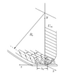

gortler_number

Definition: In fluid dynamics, Görtler vortices are secondary flows that appear in a boundary layer flow along a concave wall. If the boundary layer is thin compared to the radius of curvature of the wall, the pressure remains constant across the boundary layer. On the other hand, if the boundary layer thickness is comparable to the radius of curvature, the centrifugal action creates a pressure variation across the boundary layer. This leads to the centrifugal instability (Görtler instability) of the boundary layer and consequent formation of Görtler vortices.
Source: Wikipedia
Wikipedia Page (Something wrong with this association? Let us know.)
Wikidata Page (Something wrong with this association? Let us know.)